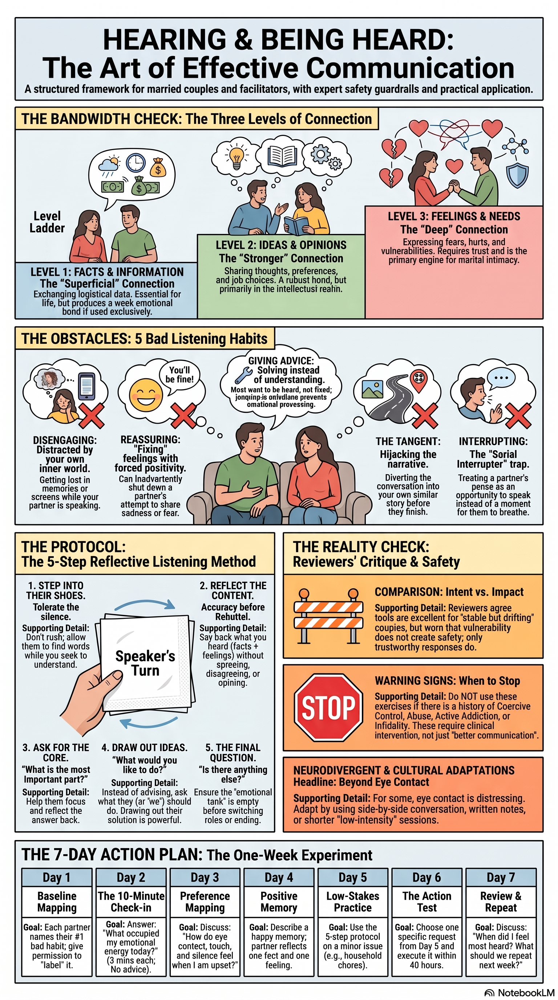
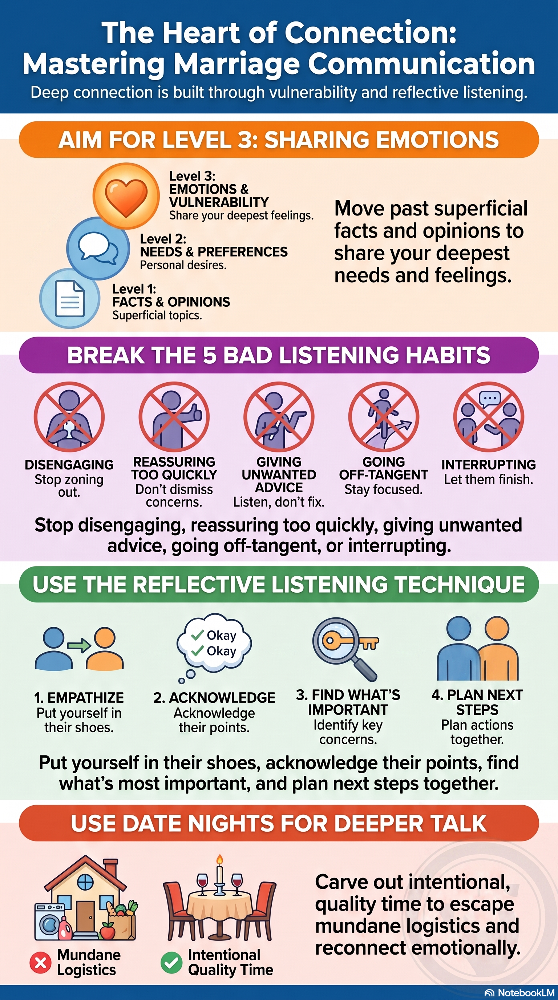

Source and artifact reconciliation
This module reconciles 5 verified sources and 13 completed artifacts from the Episode 2 research package. All thirteen review-safe artifacts are stored locally — video, audio, slides, graphics, reports, quiz, and flashcards from your pt2 NotebookLM notebook.
- 5sourcesEpisode 2 transcript plus four independent model reviews
- 13artifacts2 video · 2 audio · 2 decks · 2 graphics · 3 reports · 1 quiz · 1 flashcards
- 13stored locallyFull media room embedded below — not withheld
- 0withheldEpisode 2 curated package is complete in-repo for this prototype
Primary source
Episode 2 transcript, The Marriage Course
A 1:47:32 session locally transcribed. Hosts appear as Nicky and Sila. Vimeo source: player.vimeo.com/video/403011574. Validate exact quotations before treating any line as canonical.
Chaplain and counsellor lens
ChatGPT independent review
Strongest on naming five listening habits as observable behaviors and on separating reassurance from empathy.
Systems-analyst lens
Claude independent review
Strongest on the three-level model as a bandwidth diagnostic and on separating reflection from agreement.
Brotherly friend lens
Gemini independent review
Emphasises safety prerequisites before vulnerability exercises and facilitator boundaries.
Grandfatherly theologian lens
Grok independent review
Strongest on graduated practice design and on when reflective listening must not be attempted.
Mission brief
Connection runs on communication bandwidth
Original source teaching
What the session actually teaches
Episode 2 opens with a plain claim: close connection in marriage depends on good communication, and communication is a skill couples must keep learning. The presenters model their own early failures — letters that worked, phone boxes that did not — before offering a teachable framework.
The engine of the session is practical: three levels of communication (facts, ideas, feelings), five bad listening habits, a five-step reflective-listening protocol demonstrated live, and couple practice starting with a low-stakes memory before any contentious issue.
Teaching map: 00:04:40–00:06:06 · 00:47:05–00:52:47 · 01:00:41–01:03:35 · 01:04:04–01:10:19 · 01:42:01–01:42:17
U.S.M.C. Ministries analysis & application
The husband’s assignment
Your assignment is not to win arguments or become the household therapist. It is to listen long enough that your wife can tell whether her words reached you — before you fix, explain, or defend. Listen-back is not agreement; it is disciplined attention.
This module keeps two jobs separate. Where the marriage is ordinary and basically safe, practice widening the channel: add Level 3 moments, name your worst listening habit, and use reflective listening on one manageable concern. Where disclosure is punished, monitored, or weaponized, stop treating “talk more” as the problem and seek individual help first.
End state: You can name which communication level dominates your marriage, interrupt one bad listening habit, and complete one listen-back conversation where your wife confirms your summary was fair.
Scripture frame
Quick to hear, slow to speak
Know this, my beloved brothers: let every person be quick to hear, slow to speak, slow to anger.
James 1:19 (ESV)
Read each passage in its wider context before applying it. The caveat under each one is ministry analysis, not the text.
James 1:19–20
Original source teaching: Episode 2 quotes this as the plainest warrant for listening first — quick to hear, slow to speak, slow to anger.
U.S.M.C. Ministries analysis: Slow to speak is not silence about real wrong. James requires doing, not only hearing. Anger is not always sin; injustice may rightly grieve you.
Proverbs 18:13, 17
Original source teaching: Answering before listening is folly; the first account deserves examination before conclusion.
U.S.M.C. Ministries analysis: Humility attends before concluding — but prolonged “listening” can also become avoidance of necessary truth-telling.
Ephesians 4:25, 29
Original source teaching: Truthful speech should fit the need and build up; communication serves love, not performance.
U.S.M.C. Ministries analysis: Truth is not permission for contempt or verbal force. “Speak truth” must never authorize coercion.
Communication framework
Three levels and five listening habits
The session’s central diagnostic is bandwidth: many couples live as polite roommates on Level 1 logistics while wondering why intimacy feels thin. Your job is to notice which level you are on and which listening habit terminates your wife’s disclosure.
Three levels of communication
01
Level 1 — Facts
Original source teaching: Weather, trains, overdraft notices, schedules. Necessary logistics that produce only a weak connection if they are all you ever share.
U.S.M.C. Ministries analysis & application: Run a one-day audit: count conversations that never leave Level 1. If the count is high, schedule one protected block this week for Level 2 or 3 — not both at once.
Guardrail: Logistics are not the enemy. Pretending you “never talk” when you talk constantly about logistics is a misdiagnosis.
02
Level 2 — Ideas and opinions
Original source teaching: Politics, parenting choices, weekend plans, job suggestions. Stronger connection than facts alone.
U.S.M.C. Ministries analysis & application: Before offering your opinion, ask whether she wanted ideas or only to be heard. Default to hearing first on emotional topics.
Guardrail: Opinions can smuggle verdicts. “I think you should…” about her body, family, or competence is not Level 2 dialogue — it is pressure.
03
Level 3 — Feelings and needs
Original source teaching: Hurt, fear, gratitude, need for reassurance. Requires vulnerability and trust; the session treats this as where deep intimacy is built.
U.S.M.C. Ministries analysis & application: Once daily, add one brief Level 3 sentence that is not a preface to a request: “I felt proud when…” or “I’m anxious about…”
Guardrail: Level 3 is not safe in every marriage. Do not coach more disclosure where feelings are used against the speaker.
Five bad listening habits
01
Disengaging
Original source teaching: Internal monologue, memories, screens, lack of interest while the other person speaks.
U.S.M.C. Ministries analysis & application: When she speaks, phone face-down and out of reach. If you cannot attend now, name a return time instead of half-listening.
Failure mode: Looking up from the phone occasionally while still scrolling.
02
Reassuring too soon
Original source teaching: Premature cheerfulness that blocks negative emotion — “Don’t worry, you’ll be fine.”
U.S.M.C. Ministries analysis & application: Replace reassurance with reflection: “That sounds exhausting” before any fix.
Failure mode: Using positivity to shut down hurt because her distress makes you uncomfortable.
03
Giving advice
Original source teaching: Fixing instead of understanding — the session’s classic husband move.
U.S.M.C. Ministries analysis & application: Ask: “Do you want empathy, ideas, or action?” Default to empathy unless she chooses otherwise.
Failure mode: Offering three solutions before she finishes the first sentence.
04
Going off on a tangent
Original source teaching: Hijacking with your own story before she finishes hers.
U.S.M.C. Ministries analysis & application: Keep a mental note: “My story can wait.” Save it until after her point is reflected accurately.
Failure mode: “That reminds me of when I…” within thirty seconds of her opening.
05
Interrupting
Original source teaching: Nicky models himself as a serial interrupter; Sila names the same habit.
U.S.M.C. Ministries analysis & application: Let her partner flag interruptions in real time — with mutual permission, not as a gotcha.
Failure mode: Finishing her sentences because you are “helping.”
What the source gets right
All four independent reviews converge: Episode 2 lowers shame by treating communication as learnable engineering, not character verdict. The presenters admit their own habits — interrupter, reassurer — which makes the skills adoptable.
The three-level model, five habits, and reflective-listening protocol give husbands something observable on an ordinary evening. Separating reflect from respond is the load-bearing move: understanding before advocacy.
Where caution is required
The session assumes two willing, roughly safe partners. Reflective listening asks for vulnerability; in coercive or contemptuous marriages that can increase risk. The episode names the need for safety but offers little verification.
“Based on a lot of research” is asserted without citation. Anecdotes — celebrity divorce quotes, Nick-and-Allison’s reconciliation — illustrate; they do not prove outcomes.
Listen twice as much as we talk.
Source teaching, near 00:07:50
Useful corrective for monologues. Unhelpful if one partner already over-functions as listener while the other dominates.
Change is possible — it takes courage.
Source teaching, near 00:27:08
Hope, not guarantee. Difficulty naming feelings may reflect trauma, neurodivergence, or depression — not only reticence.
They need to know you’re not going to get angry, reject, or blame them.
Source teaching, near 00:30:01
Essential requirement — but the episode does not say what to do when that requirement is not met.
- Level 3 as gold standard can bias against cultures and temperaments that show love through action, not feeling-words.
- Reflecting back an accusatory read validates it unless you separate feeling from assumed intent.
- Do not use this protocol on infidelity, abuse, addiction, or gridlocked betrayal without qualified help.
- The napkin/talking-object exercise is wise for turn-taking — not a substitute for safety planning.
Husband’s self-check
Reflect privately. Do not use these prompts to diagnose or score your wife.
- Which level do most of our conversations stay on — facts, ideas, or feelings?
- Which of the five bad listening habits is mine — not hers?
- What do I do in the first ten seconds after hearing criticism?
- Do I summarize her fairly, or a weaker version that is easy to dismiss?
- Can I ask whether she wants empathy, ideas, or action before choosing for her?
- Would deeper disclosure feel safe to her with my current patterns — honestly?
Five-step protocol
Five-step reflective listening
The session’s protocol near 01:00:41–01:03:35. Use for emotional or unresolved topics — not for “please make coffee.”
Preconditions
- Basically safe marriage; either spouse may stop without penalty.
- One manageable concern — not the most explosive issue in the marriage.
- Physical talking object optional (napkin, pen) to mark whose turn it is.
- Understanding before agreement; reflection is not surrender.
1
Put yourself in her shoes; do not rush
Original source teaching: Tolerate silence. The listener’s job is presence, not performance.
U.S.M.C. Ministries analysis & application: Sit at respectful distance, eyes available but not staring her down. Let five seconds of silence pass without filling it.
Failure mode: Nodding rapidly while composing your rebuttal.
2
Reflect content and feelings
Original source teaching: Repeat main points in your own words — without agreeing, disagreeing, or offering your view yet.
U.S.M.C. Ministries analysis & application: “You felt alone when I stayed on my phone, and it made you wonder whether your exhaustion mattered to me.”
Failure mode: Reflecting a weaker version: “So you’re annoyed about the phone sometimes.”
3
Ask what mattered most; reflect again
Original source teaching: “What’s the most important part of what you’ve been saying?” then summarize that priority.
U.S.M.C. Ministries analysis & application: If she corrects you, revise without defending. Accuracy matters more than speed.
Failure mode: Treating correction as an attack on your intelligence.
4
Draw out her ideas before advising
Original source teaching: Ask what she might want to do — resist inserting your solution first.
U.S.M.C. Ministries analysis & application: “What would help?” or “What do you wish I understood better?” Then listen again.
Failure mode: Smuggling advice inside a question: “Have you considered just…”
5
Ask if there is anything else
Original source teaching: Close the loop before you take your turn to share your perspective.
U.S.M.C. Ministries analysis & application: Only after she confirms the summary: ask permission to share your view. Speak from your experience, not verdicts on her character.
Failure mode: Using step five to close the topic: “Anything else? Good — here’s why you’re wrong.”
The win is not persuasion. It is proving disagreement does not have to erase her voice or your self-control.
Required field action
One-week listen-back exercise
Either spouse may stop any step. If fear or contempt dominates, stop and seek help instead of powering through.
Day 1
Bandwidth audit.
Each partner tallies conversations by level (1/2/3). Compare at night — no fixing, only counting.
Day 2
Name your habit.
Each picks one worst listening habit from the five and tells the other — “I interrupt when excited.”
Day 3
Reflect once.
Ten minutes on a low-stakes topic: listener does steps 1–2 only, zero advice.
Day 4
Talking object.
Repeat with a napkin or pen marking the speaker. Count interruptions.
Day 5
Feeling without verdict.
Each names one feeling and separates it from assumed intent about the other.
Day 6
Full protocol.
Fifteen minutes on a mildly contentious issue — all five steps, then swap if willing.
Day 7
Review.
Re-tally levels vs Day 1. Each names one help and one contrivance. Stop if unsafe.
Observable finish line: Your wife confirms that one listen-back summary represented her concern accurately enough, without being required to agree with you or repeat the exercise.
Discussion prompts
Invite; do not assign. Your wife may decline any prompt without penalty.
- Which level do we spend most conversation on — and what pushes us down to logistics only?
- Of the five habits, which is mine? How would you know?
- When I reassure you, what am I protecting — you, or my discomfort with your distress?
- What would make Level 3 feel safe enough for you — one concrete behavior from me?
- Where does this technique not belong for us — what topics need a counselor, not a napkin?
Optional listen-back conversation
Use after the field exercise or on its own. Choose one low-to-moderate concern.
- Ask consent: “Is now a workable time for me to listen without trying to fix?”
- Listen: Up to five minutes without interruption. Phone away.
- Reflect: Restate content and significance in your own words.
- Revise: “What did I miss or distort?” Adjust until she confirms accuracy.
- Ask need: “Would empathy, an idea, a specific action, or more time be most helpful?”
If either person becomes flooded, name a pause and a specific return time — same rules as Module 3’s pause protocol.
Support and safety boundary
This module is education for a basically safe marriage. It is not crisis care, clinical treatment, or a substitute for qualified help.
Communication skills assume enough safety for honest speech. They fail where disclosure is punished or weaponized.
Immediate danger
Call or text 911 in the United States, or your local emergency service.
Abuse or coercive control
Do not coach victims to “open up more” or “listen better” to an abuser. Seek confidential individual safety planning.
Betrayal, addiction, trauma, or entrenched high conflict
A licensed clinician with relevant specialisation. Trained pastoral care supports that work; it does not replace it.
Never use Scripture, headship, money, children, or course completion to demand access, silence concern, or prevent help.
Claims carried forward for verification
Ministry analysis. Flagged by independent review; not settled on this page.
- “Reflective listening is based on a lot of research” near 01:00:45 — no source named.
- Celebrity-divorce newspaper quote near 00:08:43 — anonymous illustration only.
- Nick-and-Allison reconciliation story near 00:27:43 — testimony, not mechanism.
- Presenter surnames — transcript gives Nicky and Sila; Gumbel not confirmed in every segment.
Resource room
Thirteen NotebookLM artifacts from your Episode 2 notebook, embedded here. Treat generated media as study aids — read against the caution section above.
Video overviews 2 artifacts
Explainer videos from NotebookLM.
Video
Effective Communication
Open video fileNotebookLM explainer on Episode 2 themes.
Video
5 Listening Habits That Ruin Communication
Open video fileVideo on the five bad habits and how to interrupt them.
Audio briefings 2 artifacts
Critical companion listens — safety and levels.
Audio
Why vulnerability needs a safety check
Open audio fileCritical audio on when disclosure exercises misfire.
Audio
The Three Levels of Deep Communication
Open audio fileAudio walkthrough of facts, ideas, and feelings.
Slide decks 2 artifacts
PDF exports from NotebookLM.
Signal and Noise
Open slide deckSlide deck on filtering signal from noise in marital talk.
Relational Architecture
Open slide deckSlide deck on communication structure and habits.
Field graphics 2 artifacts
Single-page visual summaries.
Field graphics
The Art of Effective Communication
Open full-size graphic{kind=link}

Visual summary of levels, habits, and listening protocol.
Field graphics
Mastering Marriage Communication Guide
Open full-size graphic{kind=link}

Field guide graphic for daily connection practices.
Readable reports 3 artifacts
Markdown study aids in different registers.
Readable reports
Beyond Small Talk
Read the reportPopular-article register on moving past logistics.
Readable reports
Why You’re Lonelier Than You Should Be
Read the reportFive counter-intuitive truths about connection — read against caution.
Readable reports
Effective Communication and Connection
Read the reportNeutral executive briefing on Episode 2.
Knowledge check 1 artifact
Interactive NotebookLM export — also embedded below.
Knowledge check
Communication Quiz
Open the quizKnowledge check over Episode 2 material.
Flashcards 1 artifact
Interactive NotebookLM export — also embedded below.
Flashcards
Marriage Flashcards
Open the flashcardsFlashcard drill over the same material.
Your NotebookLM notebook
Google account required. This is the canonical source for all artifacts below.
Open “TMC (pt2): The Art of Effective Communication” in NotebookLMOptional companion journal
Episode 2 directs couples to journal exercises for emotion identification and practice conversations. Optional — this module works without it.
The Marriage Course Study JournalAffiliate disclosure: Amazon Associates link. As an Amazon Associate I earn from qualifying purchases, at no extra cost to you.
Knowledge check and flashcards
Complete the quiz and flashcard drill after working through the module.
Quiz
Flashcards
Complete module 2
Mark complete only after the observable field-action finish line. You can change this status later.